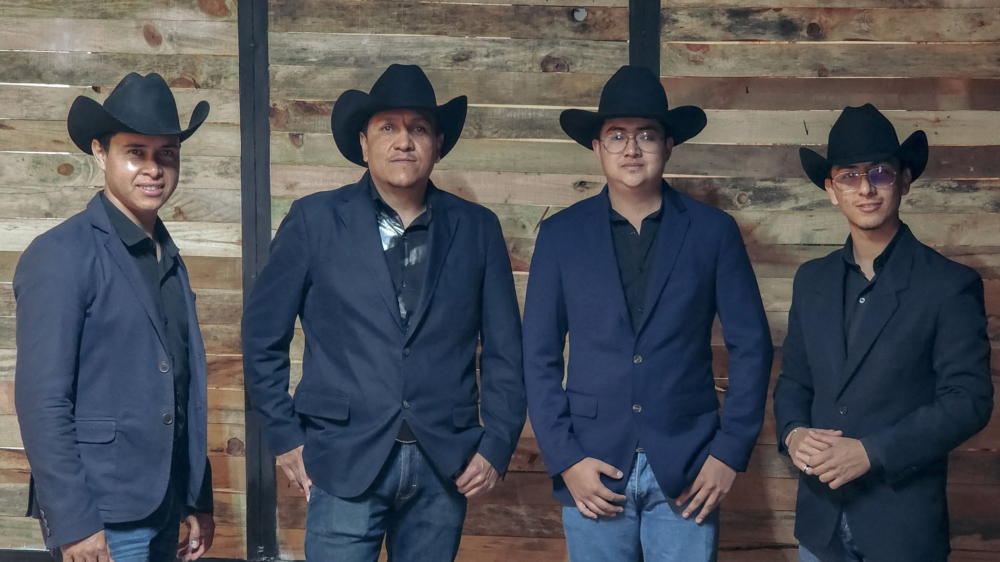
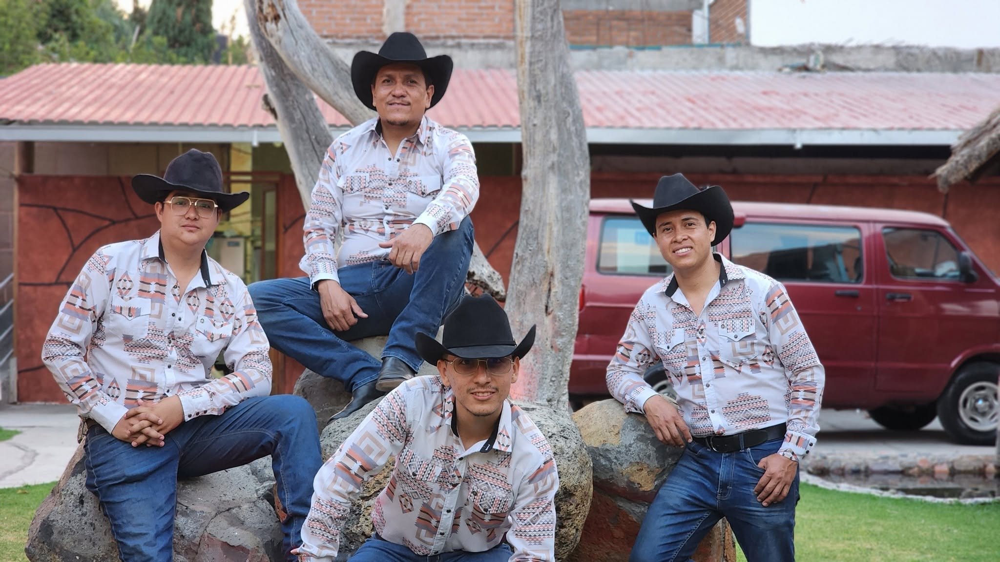
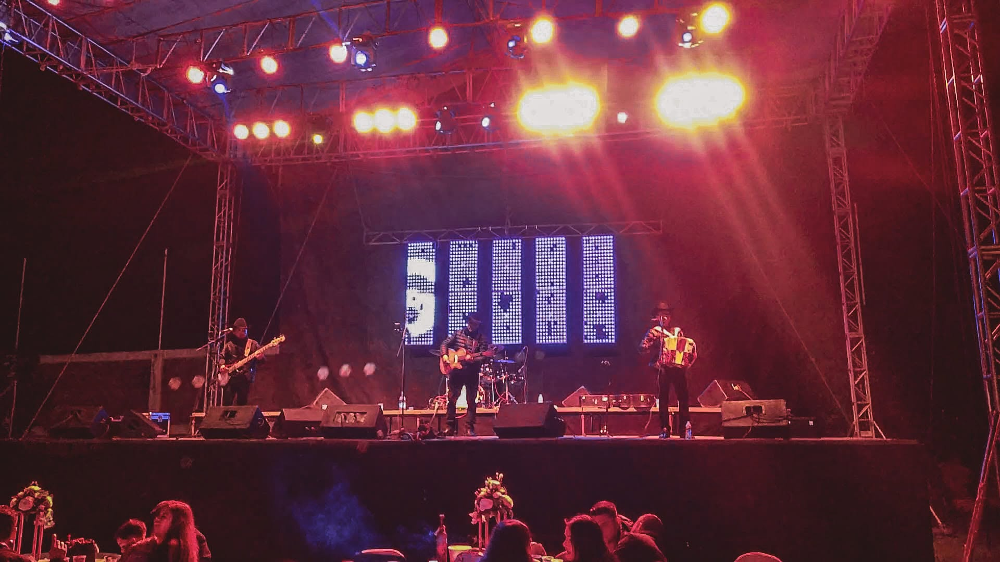

Imagen que se recuerda
Reels, fotografías mejoradas, anuncios de presentaciones, piezas para Facebook, Instagram y TikTok y una línea visual coherente.
Atracción
Su música es la protagonista. Nosotros proponemos crear la imagen, los canales y las herramientas para convertir el interés del público en oportunidades de contratación.
Propuesta de estrategia y producción. No es un sitio oficial del grupo ni una campaña publicada.
Partimos de fotografías de la agrupación y un video de actuación que permiten construir una presentación más consistente y comercial.
El objetivo no es sustituir lo auténtico por efectos. Es utilizar ese material real para responder tres preguntas fundamentales: ¿quiénes son?, ¿cómo suenan? y ¿cómo se les contrata?

El material audiovisual es la primera oportunidad para llamar la atención de un promotor o cliente.
Proponemos corregir exposición, color y contraste, limpiar el sonido cuando la fuente lo permita y crear una edición promocional con ritmo, encuadre y una ambientación de escenario creíble.
Cada elemento cumple una función concreta y puede implementarse por separado.
Reels, fotografías mejoradas, anuncios de presentaciones, piezas para Facebook, Instagram y TikTok y una línea visual coherente.
AtracciónHistoria del grupo, integrantes, videos, repertorio autorizado, servicios, galería, agenda pública y solicitud de cotización.
ConfianzaRespuestas a preguntas frecuentes, recopilación de datos del evento y derivación de prospectos al responsable.
RespuestaRegistro de interesados con fecha, sede, tipo de evento, duración y etapa de cotización; cierre bajo control humano.
ConversiónPróximas actuaciones visibles para fans y agenda interna para fechas solicitadas, apartadas o confirmadas.
OrganizaciónIdentidad artística unificada entre material visual, redes, anuncios, página web y presentación ante promotores.
PosicionamientoAsí podría funcionar un primer contacto desde la web o un canal compatible.
La IA no debe inventar tarifas ni bloquear fechas por su cuenta. Primero reúne la información necesaria. Después entrega la solicitud a quien cotiza y confirma.
Una persona ve un reel de una presentación real o un anuncio de la agrupación.
Visita la web, conoce el repertorio y comprueba la calidad artística con videos y fotografías.
Consulta disponibilidad, aporta fecha, horario, lugar y tipo de evento mediante formulario o asistente.
La persona encargada recibe la solicitud, cotiza y confirma las condiciones directamente con el cliente.
Selección de material, edición de video, tratamiento fotográfico y primeras piezas de promoción. Entregable verificable: muestra audiovisual y diseños aprobados.
Landing oficial, galerías, información real, formulario de cotización y calendario público. Entregable verificable: recorrido completo de consulta.
Base de respuestas aprobadas, asistente en canal compatible y control de solicitudes. Entregable verificable: prueba de punta a punta y confirmación humana.
Las fases y el alcance se ajustarán tras confirmar repertorio, datos de contratación, logotipo oficial, calendario y canales autorizados. No se incluyen precios sin diagnóstico y definición comercial.

No. El asistente recopilará información y podrá consultar datos autorizados si se integra con una agenda. Precios, anticipos, disponibilidad y cierre requieren reglas explícitas y validación humana.
No. La base es el material real del grupo. Cualquier ambientación creada digitalmente deberá respetar rostros, instrumentos y actuación, y mostrarse como producción promocional.
No. Se proponen activos y procesos medibles; el rendimiento dependerá del contenido, la audiencia, la inversión publicitaria y la respuesta comercial.
La titularidad y los accesos deben documentarse por contrato: cuentas, dominio, material autorizado y contactos gestionados bajo permisos acordados.
Primero una muestra visual que hable por sí sola. Después una plataforma para presentar su trabajo, atender interesados y organizar oportunidades reales.
Hablar sobre esta propuesta